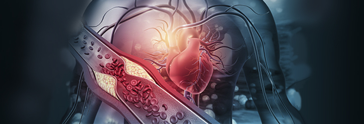

En esta área veremos las diferentes materias que abarca crecimiento y desarrollo, al mismo tiempo que aprenderás cómo estudiar, cómo organizarte en tus inicios en la universidad y cómo hacer tus propios resúmenes. En cada clase practicaremos cómo presentar los temas desarrollados, para ayudarte a perder el miedo a hablar en las mesas de examen o en las tutorías

Nos enfocaremos en estudiar el aparato digestivo desde las diferentes materias que comprenden el área de nutrición: Anatomía, Histología, Embriología, Fisiología, etc. También aprenderás las diferencias que tiene el aparato digestivo entre el lactante, el adulto y el adulto mayor. Posteriormente veremos los temas que necesitas entender y aprender, no solo para el desarrollo y presentación de cada unidad en la mesa de examen y tutorías, sino también para los próximos años de la carrera
En esta área te enseñaremos como tema principal la conformación y el funcionamiento del aparato reproductor del varón y de la mujer desde las diferentes materias que comprenden el área de sexualidad, género y reproducción, como lo son: Anatomía, Histología, Embriología, Fisiología, etc. De igual forma también veremos los diferentes temas que necesitan tanto para el desarrollo de las unidades problema en la mesa de examen y tutorías, como también para áreas y materias futuras.
-
El desarrollo de esta área está dividido en 5
módulos:
- Módulo 1: Sistema nervioso
- Módulo 2: Aparato cardiovascular
- Módulo 3: Aparato respiratorio
- Módulo 4: Sistema muscular
- Módulo 5: Metabolismo
Veremos una integración de los sistemas anteriormente mencionados en estado de reposo y los cambios que ellos tienen durante el ejercicio. Además, en el desarrollo de cada unidad problema iremos agregando los temas necesarios para integrarlas de manera completa y, de esa manera, poder resolverlas. Al igual que en los cursos anteriores, luego de estudiar cada uno de los módulos, veremos cómo presentarlos tanto para las mesas de examen como para las tutorías
En esta área estudiaremos nuestro medio interno, el aparato urinario y la relación del ser humano con el entorno desde un punto de vista biológico y social. Al finalizar veremos la relación de cada uno de los temas con las unidades problema y cómo presentarlo en los múltiples escenarios que se pueden dar en las mesas de examen.